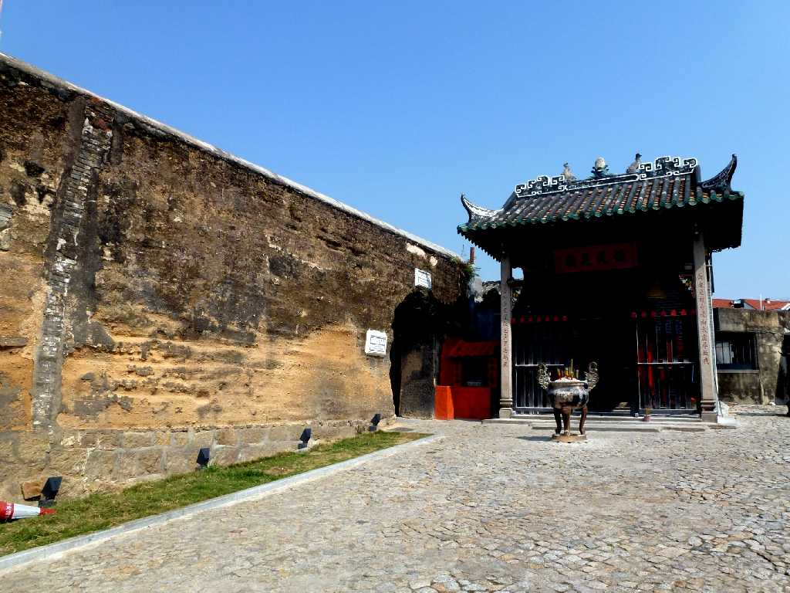
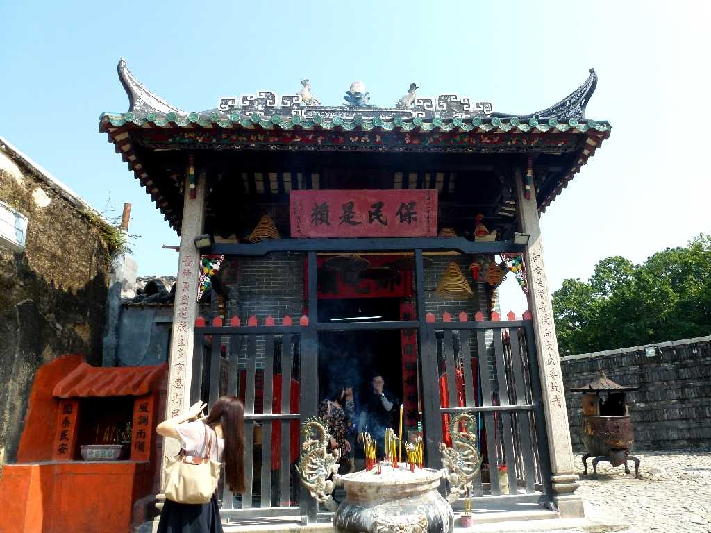
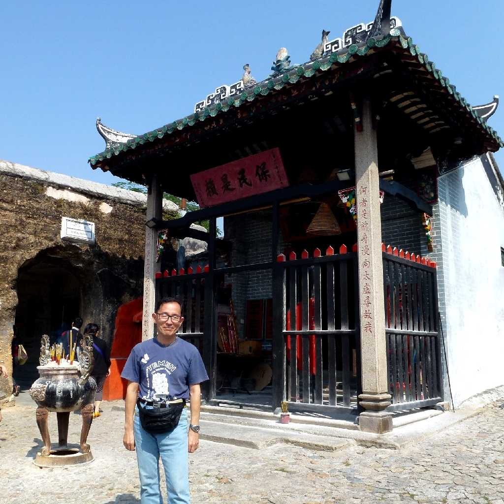
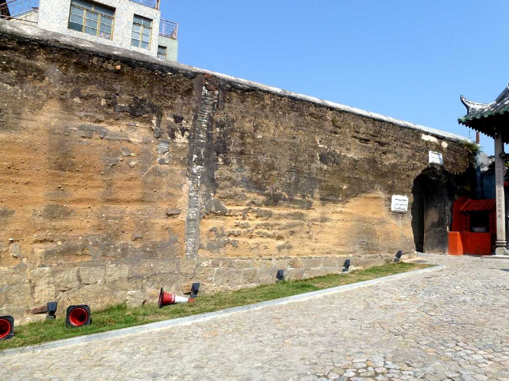

Templo de Na Tcha Troço das Antigas Muralhas de Defesa Macau 澳門

Templo de Na Tcha 哪吒廟
ナーチャ廟は１８８８年に創建されたお寺

November 6 2012 Templo de Na Tcha
ナーチャは孫悟空にも登場する暴れん坊の男子で武芸の達人で疫病退治の神様としても有名

Troço das Antigas Muralhas de Defesa 舊城牆遺址
ポルトガル人により外敵から守るため１７世紀初頭に創られた城壁で土砂わら貝殻からなる丈夫なもの